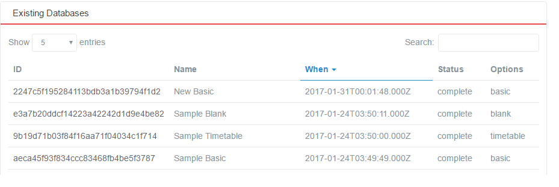
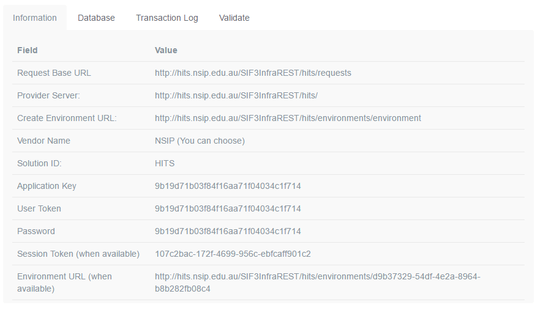

- Developer Help
- Help
Connect generic consumer
HITS environment
To be able to connect your consumer to HITS you must obtain an account on HITS. Apply on theWelcome pagefor an account.
Figure 1: SIF3 HITS Database View
Select an existing database to see the Information page of that database, which contains SIF Environment information. The second part of that page looks like this:
Figure 2: SIF3 HITS Environment Page
Configure REST Client
To configure your REST client to connect to your HITS environment, follow the steps below: (refer toSIF specificationsfor more detailed information.)
Step 1
Note: If the Environment URL and Session Token are already available from the dashboard, Steps 1–3 can be skipped.
Create an environment request payload.
The payload will populate the following XML template:
<environment xmlns="http://www.sifassociation.org/infrastructure/3.1"> <solutionId>HITS</solutionId> <authenticationMethod>Basic</authenticationMethod> <instanceId/> <userToken/> <consumerName></consumerName> <applicationInfo> <applicationKey></applicationKey> <supportedInfrastructureVersion>3.1</supportedInfrastructureVersion> <dataModelNamespace>http://www.sifassociation.org/au/datamodel/3.4</dataModelNamespace> <transport>REST</transport> <applicationProduct> <vendorName>Systemic Pty Ltd</vendorName> <productName>Test Driver</productName> <productVersion>0.1alpha</productVersion> </applicationProduct> </applicationInfo> </environment>
Obtaining the following from the Information page:
- Put the value of the “solutionId” into the <solutionId> node.
- Put the value of the “User Token” into the <userToken> node.
- Put the value of the “Application Key” into the <applicationKey> node.
- You can change the values under the <applicationProduct> node to any value applicable to you. Leave everything else as is.
Step 2
Create the authentication token for the initial environment request. Under HTTP Basic Authentication, this is done as follows:
- Create the consumer token: this is the Value of “Application Key”, followed by colon, followed by the Value of “Password” from Figure 2. For this example, it would be 9b19d71b03f84f16aa71f04034c1f1714:9b19d71b03f84f16aa71f04034c1f1714
- Base-64 encode the consumer token
- Prefix the Base 64 encoding of the consumer token with “BASIC ”
HITS will soon be implementing HMAC SHA-256 authentication as an alternative. The procedure under HMAC SHA-256 to generate an authorisation token is as follows:
- create a timestamp in ISO-8601 format eg. 2017-02-27T09:48:42.942Z
- take the string ApplicationKey:timestamp and hash it using HMACSHA256 with the Password as the key, then base64 encode this hash. ApplicationKey and Password are from the Information page; timestamp is taken from the previous step.
- Base64 encode the string ApplicationKey:Base64EncodedHash, where Application Key is from the Information page, and Base64EncodedHash is taken from the previous step.
- Prefix the result of the previous step with “SIF\_HMACSHA256 ”.
Step 3
Post the environment body payload, authenticated with the authorisation token, to the URL named in *Create Environment URL* from the Information page.
- Under BASIC HTTP authentication, the resulting token is included in the HTTP header of the POST to the URL, as the Authorization: field contents.
- Under HMAC SHA-256 authentication, the resulting token is included in the HTTP header of the POST to the URL, as the Authorization: field contents, and the timestamp value derived above is included in the HTTP header, as the timestamp: field contents.
Step 4
Your client should now be authorised to interact with a new defined environment. The Information page should now display a “Session Token” and “Environment URL” value.
Step 5
- Read the Request Base URL from the Information page. That is the base of the URL to which you will be addressing your REST queries.
- Suffix to the Request Base URL the name of the object you wish to access, followed by “s”; e.g.
Step 6
Create an authorisation token for the REST query.
Under BASIC HTTP authentication, the same token will be used for all interactions with the server.
- Read the Session Token from the Information page. This is used for the basis of the authorization value to be included with all subsequent interactions with the Environment URL.
- Read the Password from the Information page. This is used for the basis of the authorization value to be included with all subsequent interactions with the Environment URL.
- Concatenate the Application Key and the Session Token, separating them with a colon.
- Base-64 encode the resulting token
- Prefix the Base 64 encoding of the consumer token with “BASIC ”. This is the authorisation token.
Under HMAC SHA-256 authentication, each authorisation token is timestamped, so there is a different token for each post.
- create a timestamp in ISO8601 format e.g. 2017-02-27T09:48:42.942Z
- take the string SessionToken:timestamp, and hash it using HMACSHA256 with the Password as the key, then base64 encode this hash. ApplicationKey and Password are from the Information page; timestamp is taken from the previous step
- Base64 encode the string SessionToken:Base64EncodedHash, where SessionToken is from the from the Information page and Base64EncodedHash is from the previous step.
- Prefix the Base 64 encoding of the consumer token with “SIF\_HMACSHA256 ”. This is the authorisation token.
Step 7
Use the authorization field to authenticate all SIF REST queries, addressing them to the Environment URL suffixed with the plural object name.
Under BASIC HTTP authentication
- The authorisation token is included in the HTTP header for all subsequent queries, as the Authorization: field contents
- authenticationMethod with the value BASIC
- Alternatively, the request parameter access\_token can be included in the request, with the authorisation token as its value (without the BASIC prefix)
Under HMAC SHA-256 authentication
- The authorisation token is included in the HTTP header for all subsequent queries, as the Authorization: field contents
- Send a header "timestamp" with the value of timestamp from above.
- instead of headers you can also send your requests with the following request parameters :
- timestamp with the value of timestamp above
- authenticationMethod with the value SIF\_HMACSHA256
- access\_token with the last base64 value from above (without the SIF\_HMACSHA256 prefix)